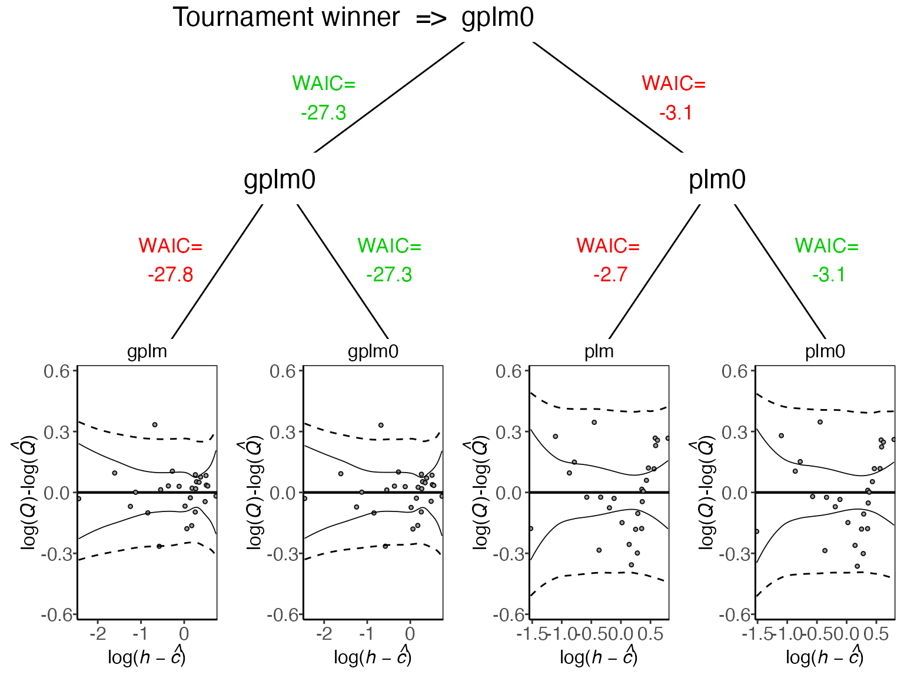
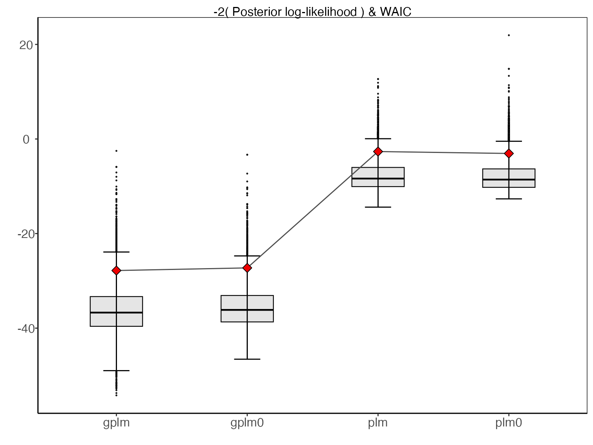
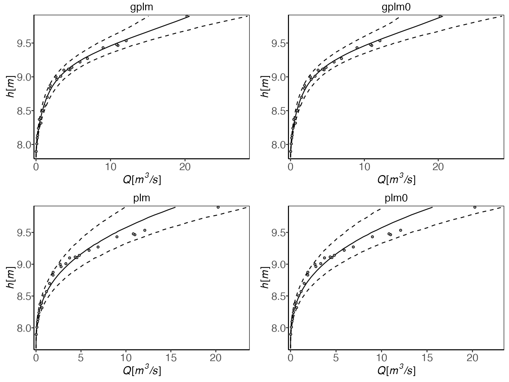
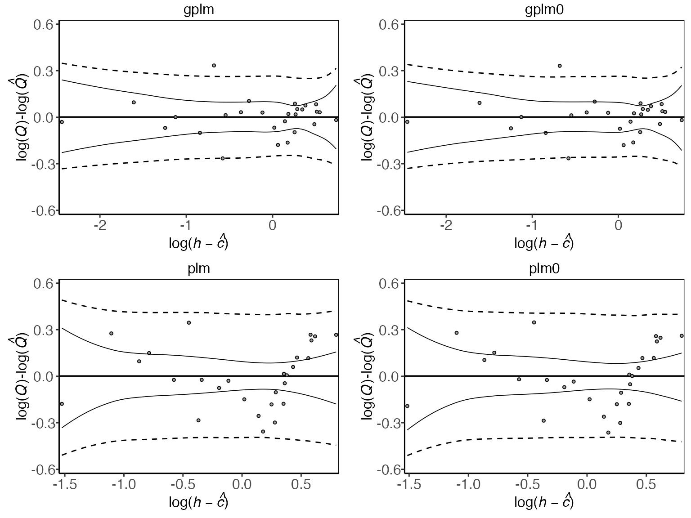

Tournament - Model comparison
Solvi Rognvaldsson, Axel Orn Jansson, Rafael Vias and Birgir Hrafnkelsson
Source:vignettes/tournament.Rmd
tournament.RmdThis vignette explores the ways you can compare the fit of the different discharge rating curve models provided in the bdrc package. The package includes four different models to fit a discharge rating curve of different complexities. These are:
plm0() - Power-law model with a constant variance (hence the 0). This is a Bayesian hierarchical implementation of the most commonly used discharge rating curve model in hydrological practice.
plm() - Power-law model with variance that varies with stage.
gplm0() - Generalized power-law model with a constant variance (hence the 0). The generalized power-law is introduced in Hrafnkelsson et al. (2020).
gplm() - Generalized power-law model with variance that varies with stage. The generalized power-law is introduced in Hrafnkelsson et al. (2020).
To learn more about the four models, see Hrafnkelsson et al. (2020). To learn about how to run the models on your data see the introduction vignette. The tournament is a model comparison method that uses Bayes factor to compute the posterior probabilities of the models and select the most appropriate of the four models given the data. The first round of model comparisons sets up model types “gplm” vs. “gplm0” and “plm” vs. “plm0”. If the posterior probability of the more complex model (“gplm” and “plm”, respectively) exceeds the “winning_criteria” (default value = 0.75) then it is chosen as the more appropriate model and moves on to the second and final round, where the winners from the first round will be compared in the same way. In the second round, if the more complex model (now the generalized power-law model) exceeds the same “winning_criteria” then it is chosen as the overall tournament winner and deemed the most appropriate model given the data. In each of the three matches, the posterior probabilities of the models are computed using the Bayes factor, assuming a priori that the two models were equally likely (see Jeffreys (1961) and Kass and Raftery (1995)). As in the introduction vignette, we will use a dataset from a stream gauging station called Krokfors in Sweden that comes with the package:
> library(bdrc)
> set.seed(1) # set seed for reproducibility
> data(krokfors)
> krokfors
#> W Q
#> 1 9.478000 10.8211700
#> 2 8.698000 1.5010000
#> 3 9.009000 3.3190000
#> 4 8.097000 0.1595700
#> 5 9.104000 4.5462500
#> 6 8.133774 0.2121178
#> 7 8.569583 1.1580000
#> 8 9.139151 4.8110000
#> 9 9.464250 10.9960000
#> 10 8.009214 0.0984130
#> 11 8.961843 2.7847910
#> 12 8.316000 0.6631890
#> 13 8.828716 1.8911800
#> 14 9.897000 20.2600000
#> 15 7.896000 0.0190000
#> 16 9.534000 12.1000000
#> 17 9.114000 4.3560000
#> 18 8.389000 0.6200000
#> 19 8.999000 2.6800000
#> 20 9.099000 3.7310000
#> 21 8.502000 0.8930000
#> 22 8.873000 1.9000000
#> 23 8.240000 0.3200000
#> 24 9.219000 5.9000000
#> 25 9.271000 6.9000000
#> 26 8.370000 0.4420000
#> 27 9.431000 9.0000000Running a tournament
The tournament function is easy to use. All you need are two mandatory input arguments, formula and data. The formula is of the form y~x where y is discharge in m\(^3/\)s and x is stage in m (it is very important that the data is in the correct units). The data argument must be a data.frame including x and y as column names. In our case, in Krokfors, a column named Q includes discharge measurements and W the stage measurements. We are ready to run our first tournament:
> set.seed(1)
> t_obj <- tournament(Q~W,krokfors,parallel=TRUE,num_cores=2) # parallel=TRUE by default and by default, the number of cores is detected on the machine
#> Running tournament:
#> 25% - gplm finished
#> 50% - gplm0 finished
#> 75% - plm finished
#> 100% - plm0 finishedThe function both runs the four models for you and runs the tournament. It’s worth mentioning that if you have already run your models of the four different kinds, plm0, plm, gplm0 and gplm and they are stored in objects, say plm0.fit, plm.fit, gplm0.fit and gplm.fit, you can alternatively run the tournament very efficiently in the following way:
> t_obj <- tournament(plm0.fit,plm.fit,gplm0.fit,gplm.fit)The printing method is very simple and gives you the name of the winner
> t_obj # or alternatively print(t_obj)
#> Tournament with winner gplm0For a more detailed summary of the results of the tournament write
> summary(t_obj)
#> round game model B DIC num_eff_param P winner
#> 1 1 1 gplm 3.201743e-02 -1.4709638 6.190845 1.302100e-01 FALSE
#> 2 1 1 gplm0 2.138732e-01 -0.8188839 6.359006 8.697900e-01 TRUE
#> 3 1 2 plm 1.427185e-06 23.6779944 3.041535 4.339125e-01 FALSE
#> 4 1 2 plm0 1.861923e-06 23.4058849 2.958588 5.660875e-01 TRUE
#> 5 2 3 gplm0 2.138732e-01 -0.8188839 6.359006 9.999913e-01 TRUE
#> 6 2 3 plm0 1.861923e-06 23.4058849 2.958588 8.705656e-06 FALSENotice here that in round 1, gplm0 is favored over gplm in the first game and plm0 over plm in the second. In the second round, gplm0 is deemed the tournament winner, i.e. the model that provides the best fit of the data at hand.
Comparing different components of the models
There are several tools to visualize the different aspects of the model comparison. To get a visual summary of the results of the different games in the tournament, write
> plot(t_obj) #this is equivalent to type='tournament_results'
Another informative way of comparing different models. The deviance of an MCMC sample is defined as 2 times the negative log-likelihood of the data given the values of the sampled parameters, thus lower values imply a better fit to the data. From this distribution, DIC and B are calculated. DIC is a metric on the fit of the models taking their complexity into account (number of effective parameters). B is used to calculate the Bayes factor between different models. To plot the posterior distribution of the deviance of the different models, we write
> plot(t_obj,type='deviance')
The red diamonds on the plot denote the DIC values for the respective models. Next, to plot rating curves from the different model, write
> plot(t_obj,type='rating_curve') Another useful plot is the residual plot
> plot(t_obj,type='residuals')
The main difference between the four models lies in the modeling of the power law exponent (\(f(h)\)) and the variance on the data level (\(\sigma^2_{\varepsilon}\)). Thus it is insightful to look at the posterior of the power law exponent for the different models
> plot(t_obj,type='f') and the variance on the data level
and the variance on the data level
> plot(t_obj,type='sigma_eps')
Finally, the panel option is useful to gain insight into all different model components of the winning model, which in this case is gplm0:
> plot(t_obj,type='panel',transformed=TRUE)
Customizing tournaments
There are ways to customize the tournament further. For example, if the parameter of zero discharge, \(c\), is known you might want to fix that parameter to the known value in the model. Assume 7.65 m is the known value of \(c\). Then you can directly run a tournament with the \(c\) parameter fixed in all models
> t_obj_known_c <- tournament(formula=Q~W,data=krokfors,c_param=7.65)References
Hrafnkelsson, B., Sigurdarson, H., and Gardarsson, S. M. (2020). Generalization of the power-law rating curve using hydrodynamic theory and Bayesian hierarchical modeling. arXiv preprint 2010.04769.
Jeffreys, H. (1961). Theory of Probability, Third Edition. Oxford University Press.
Kass, R., and A. Raftery, A. (1995). Bayes Factors. Journal of the American Statistical Association, 90, 773-795.